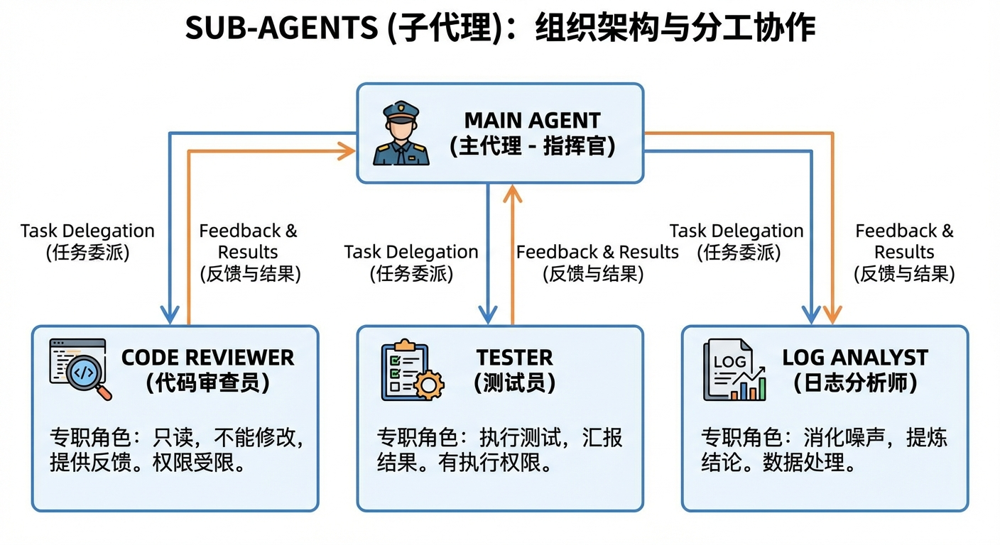
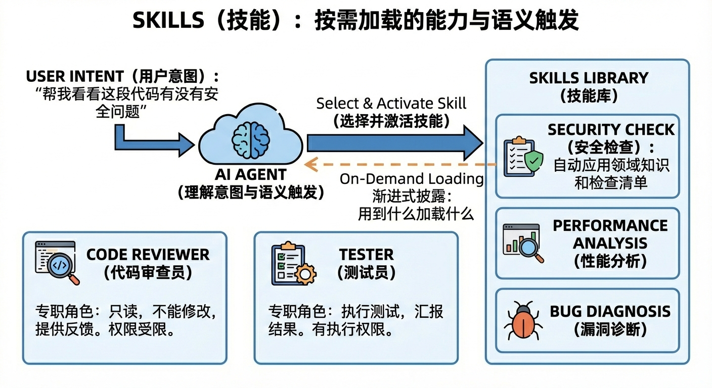

安装
# macOS / Linux / WSL（推荐，自动更新）
curl -fsSL https://claude.ai/install.sh | bash
# Windows PowerShell
irm https://claude.ai/install.ps1 | iex
# 或使用 Homebrew（需手动更新）
brew install --cask claude-code
然后进入操作系统的命令行，输入 claude 这个命令就可以开始对话了。
claude # 首次运行会提示登录
Claude Code 是付费软件，需要在 Claude 网站开账户。它所支持的账户类型包括：
-
Claude Pro / Max / Teams / Enterprise（推荐）
-
Claude Console（API 访问，需预付费）
Claude Code 支持自定义 API 端点：
export ANTHROPIC_BASE_URL=https://your-relay-service.com/v1
export ANTHROPIC_API_KEY=sk-xxx
也可以使用 CC Switch（github.com/farion1231/cc-switch） 进行切换。跨平台桌面 + CLI 一体化，已迭代到 v3.x，腾讯云社区、知乎、CSDN 均有教程，是目前社区里最主流的 Claude Code 模型切换工具。
命令行安装：
npx @songhe/cc-switch
它做了三件事：模型切换、MCP 管理和 Skills 管理。
模型切换方面，内置了 Anthropic Claude、OpenAI GPT、DeepSeek、Qwen、GLM（智谱）、MiniMax、Kimi 等模型模板。点击 “Add Provider”添加配置，选中后点“Enable”就切换，本质上是帮你改写项目级 .claude/settings.json 中的 API 配置。支持 Claude Code、Codex CLI、OpenCode、Gemini CLI 多种终端 Agent。在 Claude API 和国产模型之间一键切换，不用手动改环境变量。
MCP 管理方面，内置常用 MCP 服务器模板，交互式添加。还支持"Shared Config Snippet"在不同 Provider 间共享通用配置。
常用操作
| 操作名称 | 功能是什么 | 什么时候用 | 如何操作 |
|---|---|---|---|
| 自动编辑模式 | 让 Claude 自动修改代码，不用每次确认 | 写代码、修 Bug、调逻辑等 | MAC：shift+Tab 一次 |
| @指定文件 | 告诉 Cladue 只处理某个文件 | 修改单个文件或定位错误 | 在对话里输入 @文件名 即可 |
| 粘贴图片 | 让 Claude 看图调界面或排查错误 | 前端调界面，查页面错误 | MAC：Ctrl+V（不是 Cmd+V） Windows：Alt+V |
| 常用命令 | 管理 Claude 的状态和上下文 | 清空对话、切换模型、诊断问题 | /clear 清空上下文，重新开始； /compact 清理但保留记忆 |
| Plan 模式 | Claude 先帮你想清楚方向再写代码 | 项目刚开始、做方案设计或复杂功能时 | Shift+Tab 连按两次 |
| 记忆文件（CLAUDE.md） | 让 Claude 记住你的使用习惯和项目环境 | 希望长期保持同一风格或配置时 | 全局：～/.claude/CLAUDE.md 项目：项目目录下创建CLAUDE.md |
| 打开思考模式 | 普通思考模式 或者会使用思考模型 |
基本常开 | tab 打开，右下角会提示 |
| 深度思考（ultrathink） | 让 Claude 进入高强度思考模式 | 遇到复杂问题、性能优化或大规划时 | 提示词中加入“ultrathink”或“深度思考” |
权限模式
Claude Code 支持多种权限模式，通过 Shift+Tab 循环切换。
| 模式 | 行为 | 适用场景 |
|---|---|---|
| default | 首次使用工具时提示授权 | 日常使用 |
| acceptEdits | 自动接受文件编辑，命令仍需确认 | 信任度较高的修改任务 |
| plan | 只读模式，只能分析不能修改 | 代码审查、方案设计 |
| delegate | 只能通过 Agent Teams 协调 | 团队协作模式 |
| dontAsk | 自动拒绝未预授权的工具 | 严格受控的自动化 |
| bypassPermissions | 跳过所有权限检查（危险！） | 隔离环境如容器/VM |
YOLO 模式
YOLO 模式通过一行启动命令开启：
claude --dangerously-skip-permissions
如果我们发现 cc 左下角提示了一个 “bypass permissions on”，代表我们的 YOLO 模式已经成功启动了
安装 superpowers Skill
核心理念：让 AI 在动手写代码之前，先经历 头脑风暴 -> 方案设计 -> TDD 实现 -> 代码评审 的完整工程闭环。
现在我们使用 Claude Code 等 AI Coding 工具编码，其实你不再只是把自然语言翻译成代码， 而是在做设计，具体来说是做三件更高级的事情：
-
拆解问题
-
分配任务
-
组织多个智能体协作完成目标
当 Sub-Agents 和 Skills 成为通用语言
-
Sub-Agents（子代理） 的核心思想是：一个复杂任务可以拆解给多个专职角色。

-
Skills（技能） 的核心思想是：AI 应该知道什么时候用什么能力。
传统工具需要用户手动触发——你输入 /review，它就审查代码。但 Skills 不同，你只需要说“帮我看看这段代码有没有安全问题”，AI 就能自动判断这是代码安全审查任务，并自动激活对应的 Skill，自动应用领域知识和检查清单。
Skills 的渐进式披露架构——不是把所有知识一股脑灌给 AI，而是按需加载，用到什么加载什么。这解决了 LLM 上下文窗口的根本限制。

Agent 协作常见的痛点拆解：
-
Memory： 解决 Agent 每次对话都“从零开始”、不理解项目背景的问题，让 AI 真正记住你的代码结构、约束和上下文。
- 核心文件是 CLAUDE.md。
- Claude 每次开始对话时，都会读取这个文件。这样它就“记住”了你的项目规范，不需要每次重复说明。
- Claude Code 并不是只有一个CLAUDE.md记忆文件，全局、项目和项目的特定模块都可以拥有属于自己的记忆文件（或者也可以叫配置文件）。
-
~/.claude/CLAUDE.md # 全局（所有项目共用） ↓ 项目根目录/CLAUDE.md # 项目级（当前项目） ↓ 项目根目录/.claude/rules/*.md # 模块级（特定目录）
-
Sub-Agents： 解决单一 Agent 角色混乱、上下文污染、又写代码又做审查的问题，通过职责拆分实现关注点分离。
- 子代理是除了 Skills 之外的另一个大杀器，用于独立完成专项任务。其触发方式可以由 Claude 决定或用户指定。
-
主 Claude: 这个任务需要跑大量测试，让我创建一个子代理来处理。 子代理（test-runner）: 执行测试，只把结果汇报给主 Claude - SubAgents 适合隔离执行——高噪声任务（比如在大量日志中寻找出错信息，在大量文档中检索相关资源）、需要特定权限的任务。
-
Skills： 解决 Prompt 不可复用、经验无法沉淀、团队能力难以传承的问题，把个人技巧变成可组合的工程资产。
-
Hooks： 解决 Agent 执行过程不可控、缺乏检查点、容易“越权操作”的问题，在关键节点引入自动校验和人工兜底。
-
Headless： 解决 Agent 只能在 IDE 里交互、无法进入自动化流程的问题，让 AI 能在 CI/CD 中无人值守地运行。
-
# GitHub Actions 中 - name: Auto-fix code issues run: claude --headless "Fix all linting errors in src/"
-
-
Agent SDK：解决只会用对话的方式使用 Agent，难以嵌入现有系统和工作流的问题，用代码驱动 Agent，构建可编排的工程流程。
-
MCP（Model Context Protocol）：MCP 让 Claude 连接外部工具和服务，适合工具连接——可以把任何外部系统变成 Claude 可调用的工具。
Plugins：打包容器
当你开发了一套好用的 Commands、Skills、Hooks 组合，想要分享给团队或社区时，就需要 Plugins。
Plugins 不是一种新能力，而是打包机制——就像 npm 包把一堆 JavaScript 文件打包在一起，Plugin 把一组相关的 Claude Code 扩展打包在一起。
my-team-plugin/
├── commands/ # 斜杠命令
│ └── review.md
├── skills/ # 技能
│ └── security-check/
│ └── SKILL.md
├── agents/ # 子代理
│ └── test-runner.md
├── hooks/ # 钩子
│ └── pre-edit.sh
└── plugin.json # 插件配置
下面是一个典型的 Plugins 使用场景：
你是团队的技术 Lead，花了两周时间打磨出一套完美的代码审查流程：一个 /review 命令触发审查，一个 code-quality Skill 自动分析代码质量，一个 test-runner 子代理执行测试，还有一个 Hook 确保所有修改都有对应的测试。
与其让团队成员手动复制这些文件，不如打包成一个 Plugin，新成员只需一条命令就能获得完整的工作流。
Plugin 的价值在于可复用、可版本化、可分发。
一份模板 CLAUDE.md
# CLAUDE.md
This file provides comprehensive guidance to AI assistants (like Claude Code) when working with code in this repository.
## Important Notes for AI Assistants
### Coding Rules (CRITICAL - MUST FOLLOW)
1. **不要自作聪明瞎写代码** - 写代码前要先确认方案再执行
2. **不要添加冗余代码** - 只做必要的校验，不添加各种无关的校验
3. **精简代码** - 如果已有功能/组件/函数，优先重构和抽象
4. **不要瞎改之前的代码** - 确认改完不会影响其他功能
5. **不要重复造轮子** - 优先使用已有的类似功能
6. **严格按照示例文档** - 有参考文档时严格按照示例写代码
7. **打印清晰的调试日志** - 每个步骤都要打印正确的上下文
8. **不要硬编码可配置信息** - 写到环境变量文件 .env 中
9. **首先考虑快速简单完成任务** - 别搞复杂的东西
10. **不要做任何格式化代码的操作**
11. **不准启动服务，不得占用 3006 端口**
12. **每次写完功能后测试正确性** - 通过 API 调用或网页请求测试
13. **测试正确后清理调试日志等信息**
14. **通过 chrome devtools mcp 调试时禁止关闭用户正在使用的实例** - 启动新的 isolated 实例